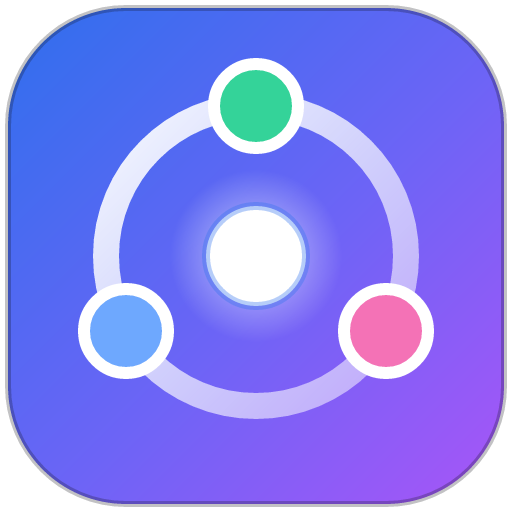
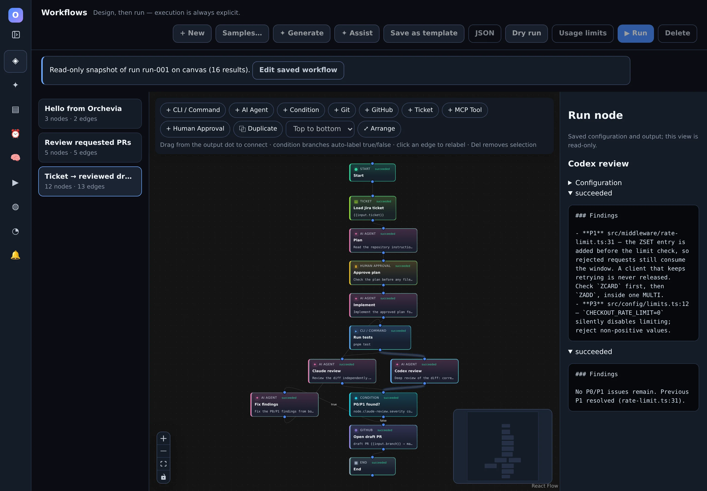
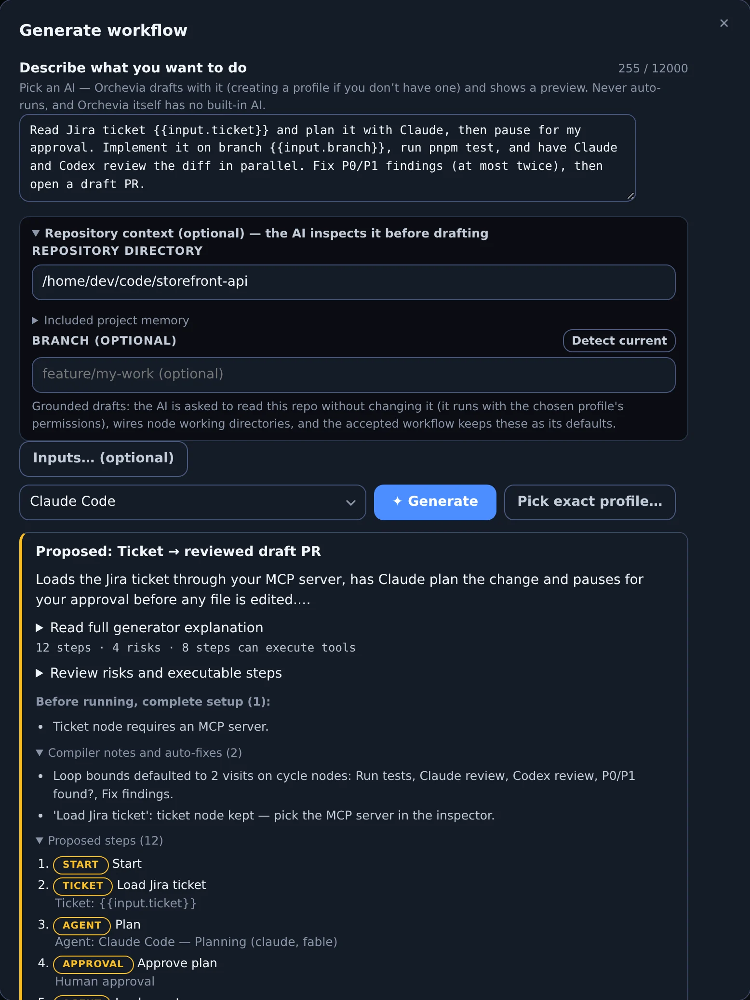
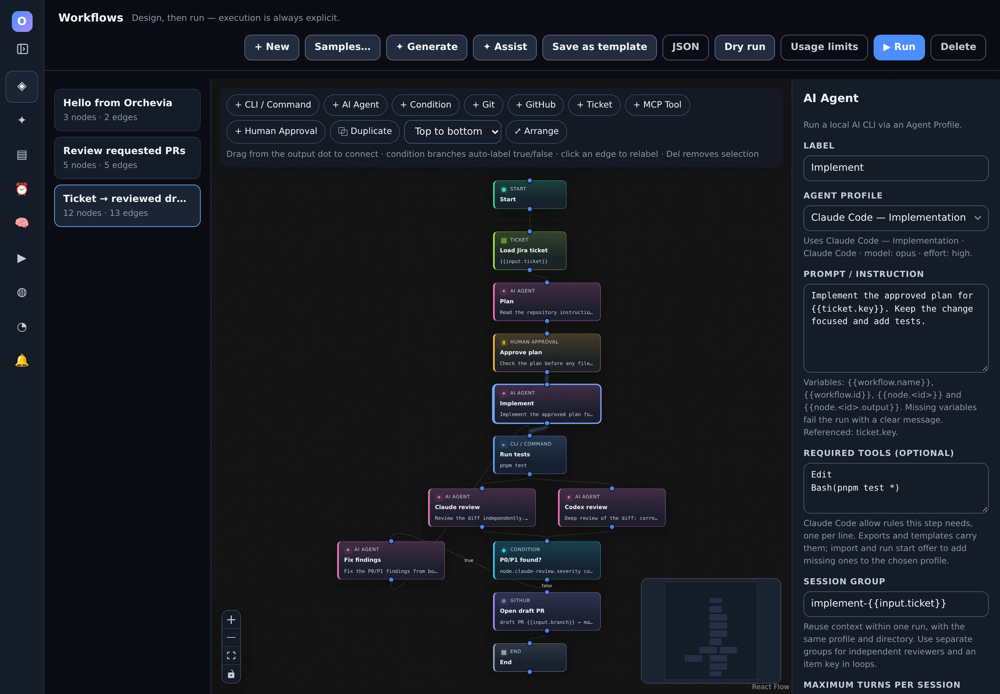
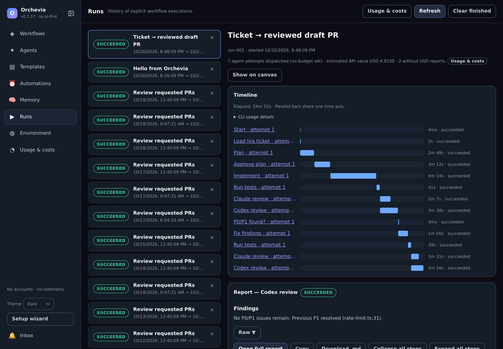
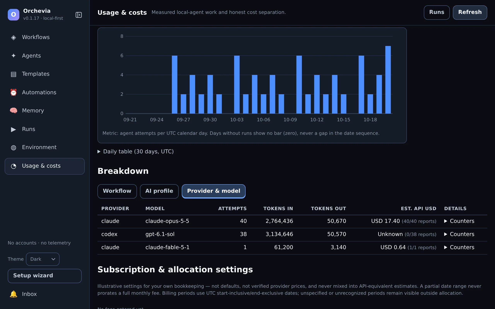
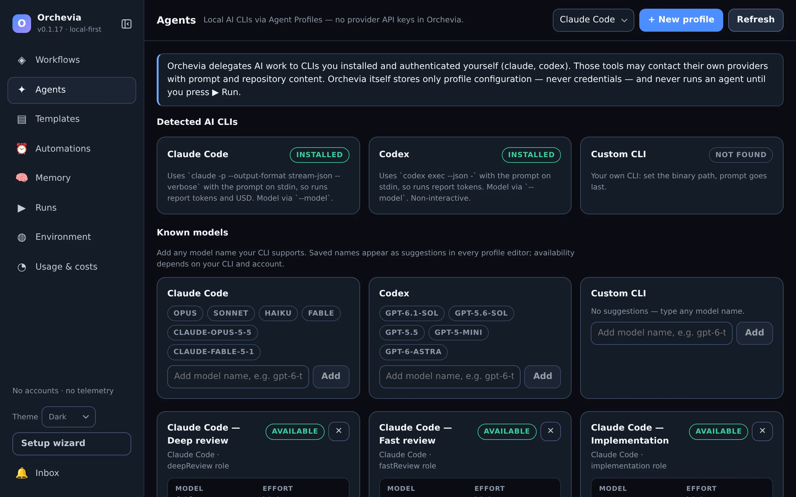

Plan, implement, test, review
Plan → Approve → Implement → Test → Review
Turn a change request into an inspected plan, then implementation and an independent review, using your project's real test command.

Orchevia
Orchevia runs Claude Code, Codex, git, gh and your
test commands as a visual workflow on your own machine. Plan, approve,
implement, test and cross-review — with the subscriptions you already have.
No account · No API keys · No telemetry · Apache-2.0

claude and codex. No keys, no Orchevia bill.
Try it here
This is the run from the screenshot above, replayed in your browser. Claude plans, the run waits for you, Claude implements, tests run, Claude and Codex review in parallel, a P1 finding loops back once for a fix, and a draft PR opens.
Press ▶ Run demo to start. The run pauses at the approval gate until you approve.
Simulated in your browser — nothing is installed or sent anywhere. In the app, each step runs your real CLI and keeps its full output.
Workflow generator
✦ Generate asks your own Claude Code or Codex CLI to draft the workflow. Orchevia validates and compiles the draft into a preview — it never runs it.
Read Jira ticket {{input.ticket}} and plan it with Claude, then pause for my approval. Implement it on branch {{input.branch}}, run pnpm test, and have Claude and Codex review the diff in parallel. Fix P0/P1 findings (at most twice), then open a draft PR.
Generation prefers native Agent, Git, GitHub, Ticket, MCP, Condition and Approval nodes; Command nodes cover your own tools. Instructions such as “CLI only” win. ✦ Assist improves or rearranges an existing workflow through the same reviewed preview.

Product tour
Real screens from the desktop app. Edit on the canvas, follow each run step by step, and see what your CLIs reported.

{{variables}}, required tools, session reuse, timeouts and
loop bounds.



~/.local/bin.
Recipes
Build a small manual flow first. Add integrations and scheduling once its steps work in your repository. Nine built-in templates help you start.
Turn a change request into an inspected plan, then implementation and an independent review, using your project's real test command.
Load a Jira ticket through your MCP server, then use native Git and GitHub operations for the handoffs. Every write step stays visible.
Give each reviewer its own profile, compare their findings, and add a local watcher once the flow is proven.
Capabilities
Constrained conditions (no scripting), parallel branches with joins, failure edges, bounded retries and guarded review/fix loops.
Agents can resume their own session within a run and receive bounded handoffs from earlier steps, while reviewers stay independent.
Safe Git operations (dirty states refused), GitHub through your own
gh, and Jira or any tool through MCP servers you control.
Durable schedules, PR review and feedback watchers with bot-loop guards, an inbox, and an opt-in tray mode.
Dry runs replay node results from fixtures so you can check routing without executing a single tool.
Templates with typed inputs, JSON import/export, and a project playbook of accepted commands and conventions.
Authoring
Simple JSON uses readable node keys and portable profile roles; Advanced JSON keeps the full runtime format. Choose a native node when it supports the work and a Command node for your own tools.
| Work | Node | What you supply |
|---|---|---|
| Plan, implement or review | AI Agent | Profile, prompt and repository |
| Repository and PR operations | Git / GitHub | Supported operation, repository and authenticated tools |
| Ticket or integration data | Ticket / MCP Tool | Enabled MCP server, discovered tool and arguments |
| Tests and local developer tools | Command | Executable and separate arguments; a shell only when explicit |
| A decision or human checkpoint | Condition / Human Approval | Constrained rule or approval message |
Safety
Orchevia passes permission flags on the command line and never edits your Claude Code or Codex settings. You decide once, in setup or Environment, whether agents work without asking; an Agent Profile can still pick its own level:
No flag is added; your own Claude Code or Codex configuration decides what a step may do. What every profile uses until you choose.
--allowedToolsAn explicit Claude Code allow list. Nodes declare the tools they need, and imports and runs warn about anything the profile doesn't grant.
Bypasses permission checks, for every agent or one profile. Never chosen for you, and a schedule that uses it needs its own trust opt-in.
When headless Claude Code refuses a tool, the step fails with the exact allow rules that would admit it instead of a silent “success”. Codex and Claude text-output profiles report no refusals, so these can't be caught.
Opening, importing or previewing never runs anything. Cancel and timeouts stop the step's process group on Linux and macOS.
Workflows and runs live in local SQLite. Your AI CLIs, GitHub and MCP servers may still contact their own services.
Getting started
git, gh, claude and
codex
and creates recommended agent profiles.
The
getting-started guide
begins with a one-step echo workflow, then adds an agent,
tests, an approval gate and reuse.
Headless Claude Code refuses tools its settings don't allow. If a step reports tools refused, add the listed rules to the profile in one click.
Download
Free and open source. The links below always point to the latest release. Windows is not supported yet.
Save
SHA256SUMS
next to the installer, keep the file names, and look for OK:
# Linux
sha256sum -c SHA256SUMS --ignore-missing
# macOS
shasum -a 256 -c SHA256SUMS --ignore-missingmacOS: builds are not signed or notarized yet. Run the command below, or open the app once and choose Open Anyway in System Settings → Privacy & Security.
xattr -d com.apple.quarantine /Applications/Orchevia.app
Linux:
sudo apt install ./Orchevia-linux-x86_64.deb, or
chmod +x the AppImage and run it.
Contributors can build from source with Node.js 24+, pnpm 10+, Rust stable
and the platform dependencies in
the development guide. pnpm dev opens a browser demo with a mock backend;
pnpm tauri dev runs real workflows in the desktop app.
git clone https://github.com/iazaran/orchevia.git
cd orchevia
pnpm install
pnpm tauri devFAQ
No. Orchevia orchestrates CLIs you install and sign in to yourself, so AI steps use your existing Claude or ChatGPT/Codex plan and its limits. A command-only workflow needs no AI CLI at all.
Orchevia is free and open source (Apache-2.0). Usage of your AI CLIs is billed by their providers as usual. Runs show the tokens and any dollar estimate a CLI reports; those estimates are not your subscription bill or remaining quota.
Workflows and run history live in local SQLite, and Orchevia has no telemetry or hosted worker. Your AI CLIs, GitHub operations and MCP integrations may contact their own remote services.
Yes. Add a custom CLI profile, or use a Command node with an executable and separate arguments. Templates are language neutral; you supply the commands, models and conventions that work in your project.
Inspect per-step errors and partial output in Runs. Workflows can define retries and failure paths. Cancelling stops the active step and its process group on Linux and macOS; it does not undo earlier file edits, commits or remote writes, so review side effects before rerunning.
Schedules and watchers need the app running. Background mode keeps it in the system tray when the window closes. Quitting the app or shutting down the machine stops local automation; there is no cloud worker.
Linux x86_64 and macOS on Apple Silicon and Intel. Windows is not supported yet. macOS installers are not signed or notarized. Steps run with your user permissions and are not sandboxed.
Orchevia is a young, maintainer-run project. A star helps other developers find it; a workflow recipe, a setup fix or a bug report with a redacted log makes it better for everyone.